LA POPOLAZIONE EUROPEA TORNA A CRESCERENel tardo Seicento, la popolazione europea iniziò a crescere gradualmente, quasi raddoppiando in circa 140 anni da circa 100 milioni nel 1660 a 187 milioni nel 1800. La crescita demografica fu più intensa nella seconda metà del XVII secolo, con variazioni regionali, come un aumento significativo in Inghilterra e ritmi più lenti in Europa centrale, orientale e mediterranea. 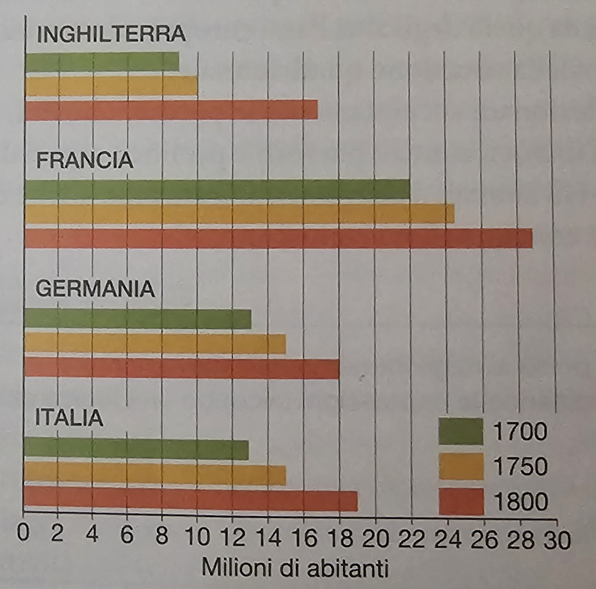 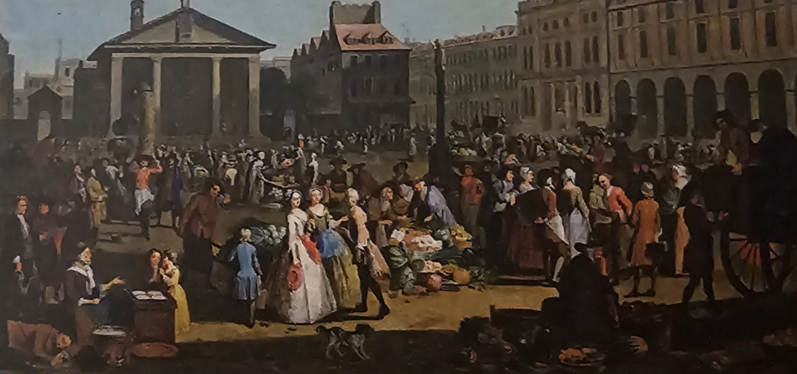
L'AGRICOLTURA INGLESE È ALL'AVANGUARDIAAll'inizio del settecento L’inghilterra era il paese più ricco d'Europa.Nel periodo dal Cinquecento al Seicento, nelle campagne inglesi, si verificarono cambiamenti significativi. Le terre comuni, coltivate collettivamente dai contadini secondo antiche usanze medievali, furono privatizzate e recintate Le recinzioni sono strutture o barriere fisiche utilizzate per delimitare o separare spazi. Esse possono essere realizzate con vari materiali, tra cui legno, metallo, plastica o filo spinato, e vengono impiegate per diversi scopi in diverse contestualizzazioni. in campi più grandi. All'interno di queste recinzioni, i nuovi proprietari modernizzarono l'agricoltura, adottando la rotazione triennale e successivamente, nel Settecento, la rotazione quadriennale. Questo miglioramento coinvolse anche l'allevamento, con una selezione accurata degli animali per ottenere maggiori rendimenti in lana, latte e carne. Gli animali d'allevamento fornivano anche letame, utilizzato come concime principale. 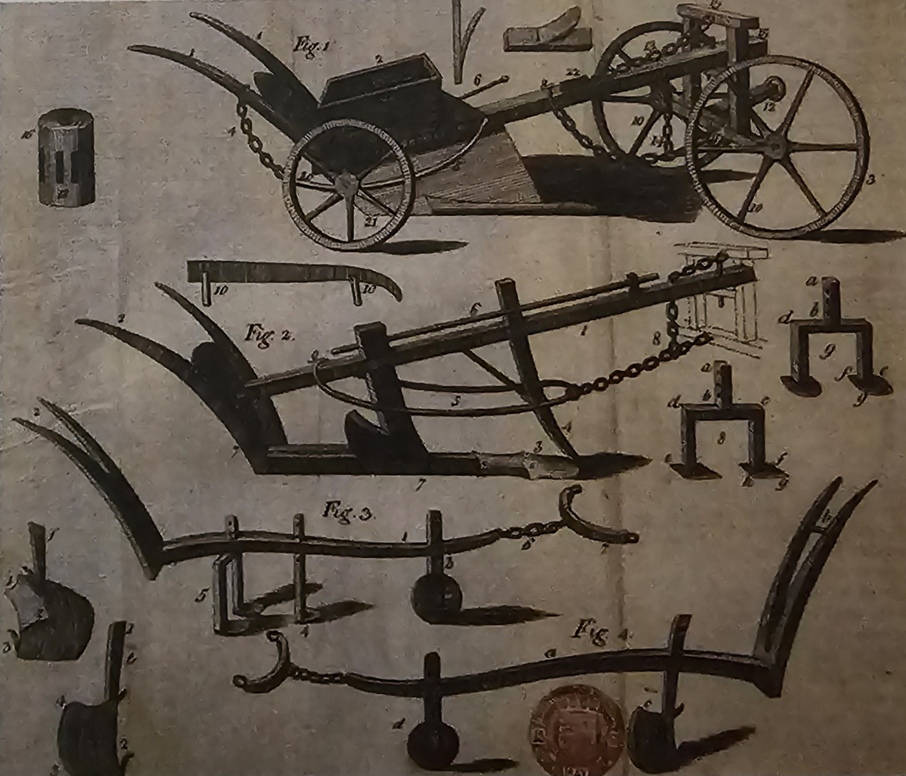 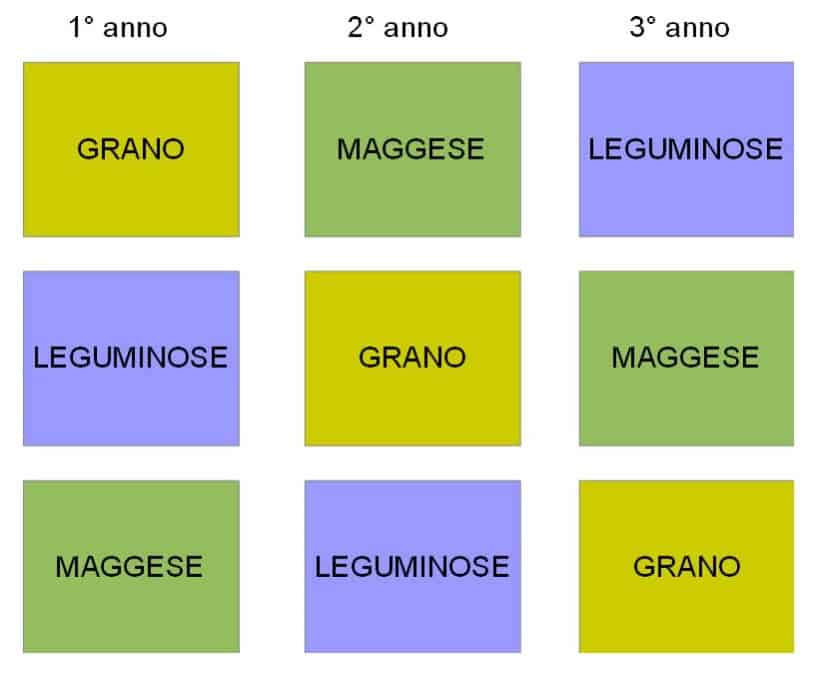Innovativo aratro realizzato dall'agronomo Jethro Tull in una tavola del 1799. (Londra, British Library) LA RIVOLUZIONE AGRICOLA PREPARA E FAVORISCE LA TRASFORMAZIONE DELL'INGHILTERRANel Settecento, la maggior parte dei terreni agricoli in Inghilterra era nelle mani di grandi proprietari, prevalentemente membri dell'aristocrazia. A differenza di molti nobili europei, i nobili inglesi si dedicarono attivamente agli affari e al commercio, investendo i capitali In modo generale, il termine "capitali" si riferisce a risorse o asset che sono utilizzati per produrre beni e servizi, creare valore economico o sostenere attività specifiche. accumulati nelle loro moderne e redditizie aziende agricole in altre attività produttive. Finanziarono la costruzione di strade e canali, sostentarono manifatture artigianali che poi si trasformarono in industrie, e sovvenzionarono viaggi commerciali oltremare. Queste attività generate contribuirono a ulteriori accumuli di ricchezza reinvestita.  LA RICCHEZZA DELL'INGHILTERRA È LEGATA ANCHE AI COMMERCINel Settecento, l'Inghilterra aveva consolidato il suo dominio marittimo, superando le principali potenze europee come l'Olanda e la Francia, anche attraverso conflitti. Nel 1713, ottenne il monopolio Il monopolio è una situazione di mercato in cui un singolo produttore o venditore controlla l'intera offerta di un bene o servizio in un determinato settore o area geografica. In altre parole, è quando un'azienda o un individuo detiene il controllo esclusivo sulla produzione o la vendita di un particolare prodotto o servizio, senza la presenza di concorrenti significativi. sulla tratta degli schiavi con le colonie spagnole e vantava una flotta navale superiore in numero e potenza. Questa supremazia le garantiva rifornimenti efficienti di materie prime dalle colonie e la possibilità di vendere prodotti necessari nelle colonie ma prodotti legalmente solo in patria, come tessuti di cotone. Tuttavia, la crescente domanda interna di beni di consumo Il bene di consumo, chiamato anche bene diretto, è quel tipo di bene che produce un’utilità diretta per il consumatore finale. Oltre ai beni di consumo esistono anche i beni strumentali: questi si distinguono dai beni diretti perché vengono impiegati per produrre altri beni economici. in Inghilterra, compresi cibo, stoffe e abbigliamento, era in aumento con la crescita demografica. 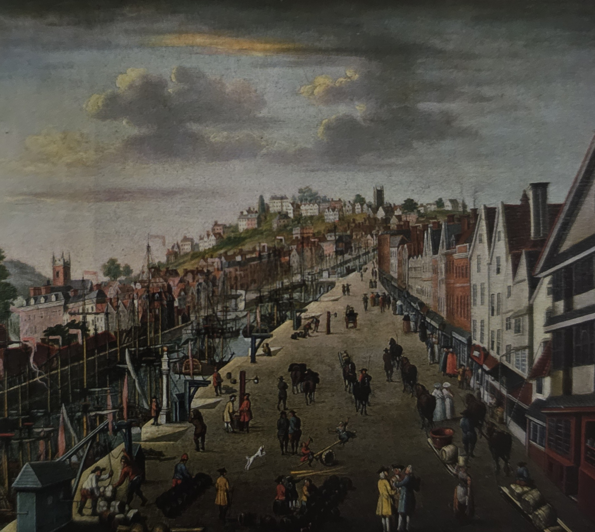 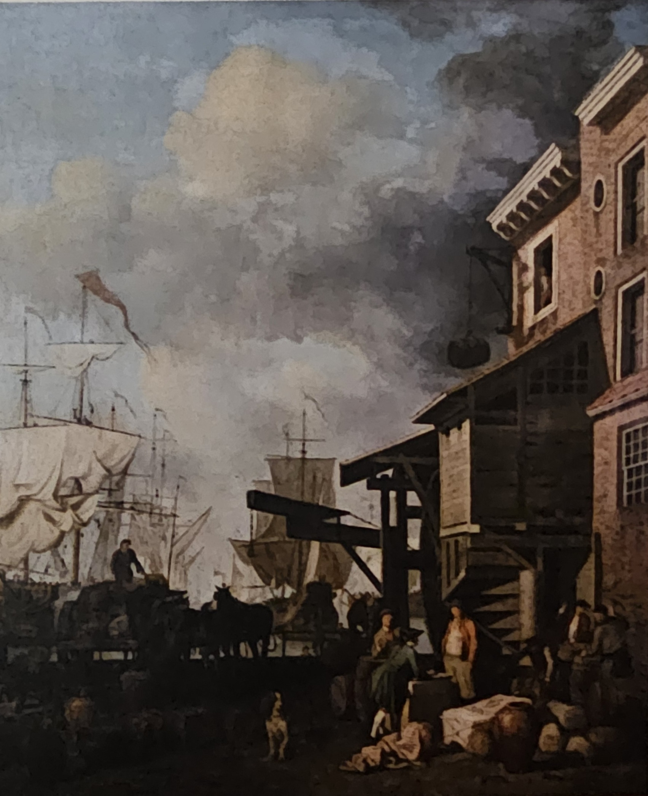
IL SISTEMA DEL LAVORO A DOMICILIO NON BASTA PIÙDurante il Medioevo, la trasformazione delle materie prime, come la lana, in prodotti finiti avveniva principalmente nelle botteghe degli artigiani, che utilizzavano macchine semplici come i telai. Tuttavia, alla fine del Cinquecento, in Inghilterra, emerse il lavoro a domicilio, svolto nelle case proprie per conto di mercanti cittadini. Questi mercanti fornivano materie prime e talvolta strumenti alle famiglie contadine, che lavoravano nei momenti liberi dalla coltivazione dei campi. Gli uomini tessono, le donne filano, mentre vecchi e bambini sono coinvolti avvolgendo il filo in matasse. Pur con compensi non elevati, i contadini erano disposti a collaborare, beneficiando i mercanti. Nel Settecento, gli artigiani tessili e i tessitori a domicilio non potevano soddisfare le crescenti esigenze dei coloni e della popolazione inglese in aumento. Era necessario migliorare la produttività con nuovi metodi di lavoro per produrre di più in meno tempo e senza aumentare i costi. 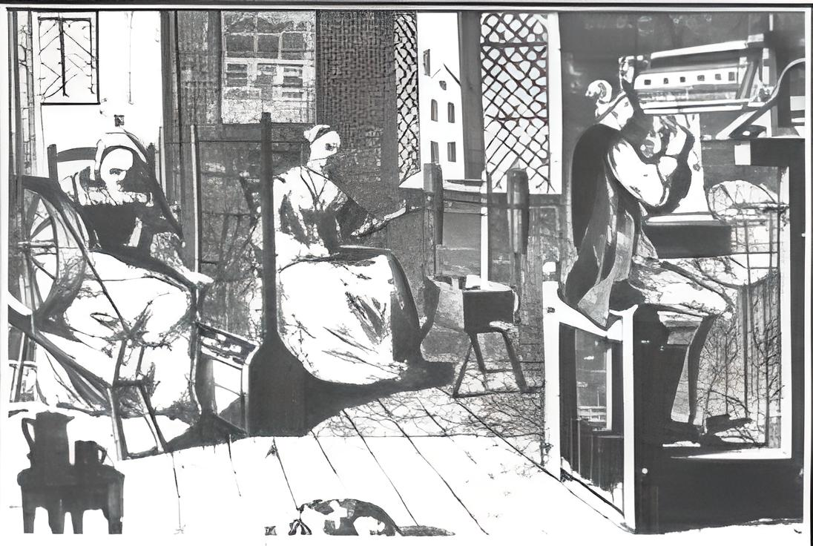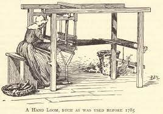
L'INDUSTRIA TESSILE SI INNOVA CON EFFICACI INVENZIONIFu proprio ciò a scaturire la necessità della creazione di nuovi strumenti per la produzione. Nel Settecento, il settore tessile fu rivoluzionato da innovazioni come la navetta volante La "navetta volante" è una parte di un telaio di un telaio da tessitura utilizzato nel processo di filatura. Si tratta di un componente che tiene il filo di ordito e lo sposta avanti e indietro attraverso la trama del tessuto durante il processo di tessitura. La navetta volante fu un'innovazione importante nell'industria tessile durante la Rivoluzione Industriale. di John Kay. I telai meccanizzati divennero così veloci che richiedevano il lavoro giornaliero di 7-8 operai solo per il rifornimento di filo. I filatoi furono migliorati, accelerando il processo. Filatura e tessitura furono rapidamente meccanizzate, consentendo a un singolo operaio, con l'aiuto di un ragazzo, di sorvegliare contemporaneamente il lavoro di 4 telai nel 1833, con una produzione venti volte superiore a quella di un tessitore manuale. 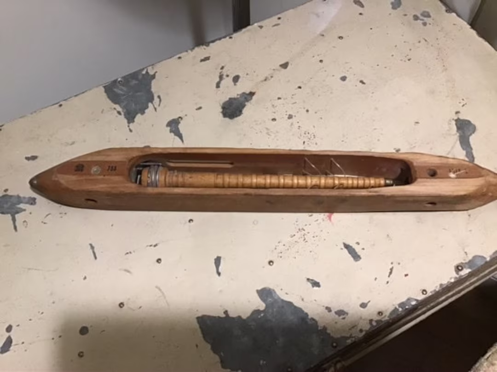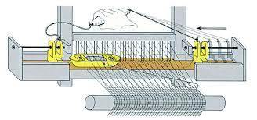
CARBONE, ACQUA E VAPORE MUOVONO LE NUOVE MACCHINENel Settecento, la forza manuale non sufficente per i nuovi macchinari tessili portò all'uso di nuove energie. Inizialmente, l'energia idraulica fu sfruttata con mulini vicino ai torrenti, ma con limitazioni stagionali. Si tentò poi l'utilizzo del vapore con la macchina di Thomas Newcomen nel 1705, ma era costosa. James Watt nel 1769 perfezionò la macchina a vapore, rendendola più efficiente ed economica. La sua invenzione fu ampiamente impiegata nelle miniere e nell'industria tessile, successivamente estendendosi a settori come la siderurgia e i trasporti. 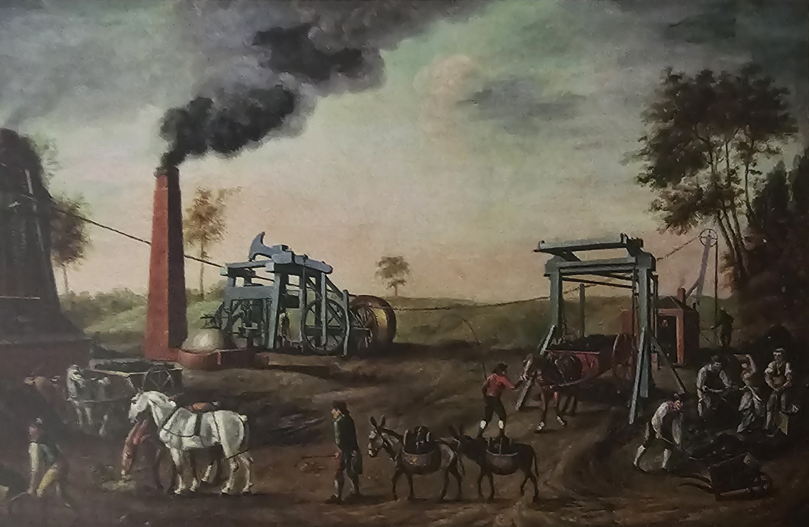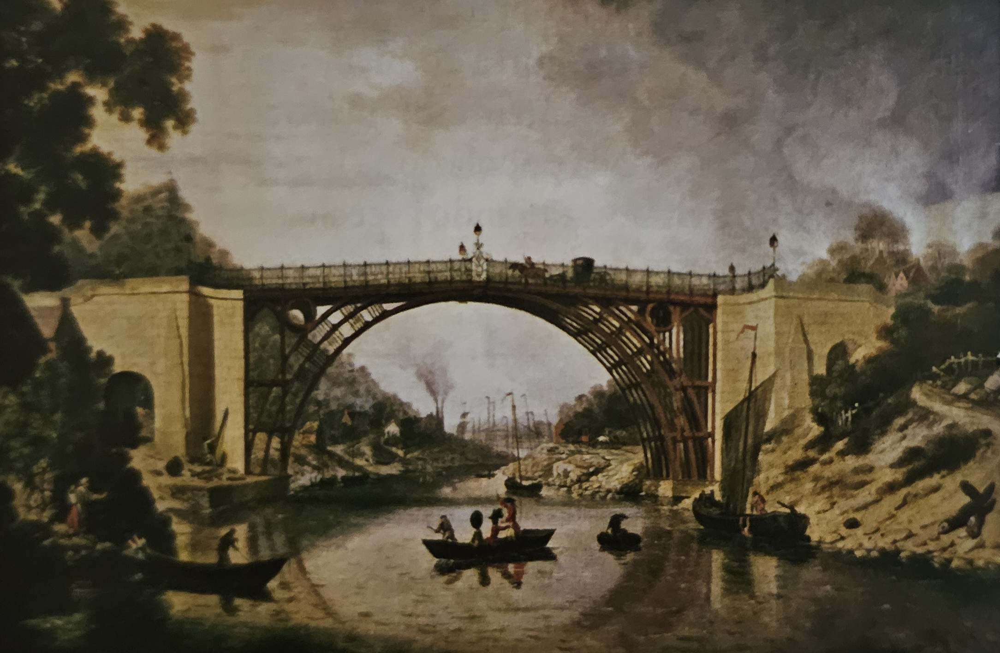
PERCHÉ SI PARLA DI RIVOLUZIONE INDUSTRIALELa rivoluzione industriale, nata dalla combinazione di macchine, carbone e vapore, ha segnato un profondo e irreversibile cambiamento nel lavoro e nella vita umana. Iniziata in Inghilterra alla fine del Settecento grazie a condizioni favorevoli come la crescita demografica, capitali disponibili e abbondante manodopera economica, si è poi diffusa nell'Ottocento in Europa continentale e in varie parti del mondo. Questo fenomeno ha trasformato radicalmente il modo di produrre e vivere, diventando la più significativa rivoluzione del periodo. 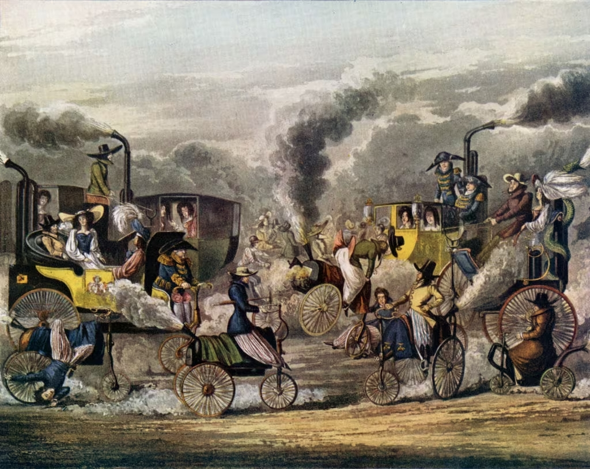
|
 |